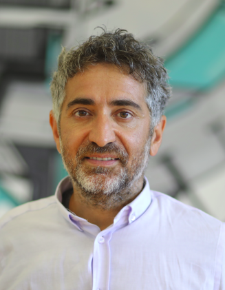

İstanbul Bilgi Üniversitesi Eski Silahtarağa Elektrik Santralı Kazım Karabekir Cad. No: 2/13 34060 Eyüpsultan İstanbul Santralistanbul / EN1-104
My Book (for Natural Language Processing): Mastering Transformers
The book covers hands on Transformer-based language models.
https://www.packtpub.com/product/mastering-transformers/9781801077651
https://www.amazon.com.tr/dp/1801077657
Artificial Intelligence Research Group (Bilgi University) http://ai.bilgi.org.tr/
Github Link https://github.com/savasy/
University Web Site Link to the university
Kaggle Link https://www.kaggle.com/savasy
Turkish NLP Pipeline https://github.com/savasy/Turkish-Bert-NLP-Pipeline
Trained Bert Model on Hugging Face https://huggingface.co/savasy
Linked IN https://www.linkedin.com/in/savasy/
Google Scholar https://scholar.google.com.tr/...
Detailed CV PDF
Natural Language Processing
https://github.com/savasy/cmpe346
Busines Intelligence
https://github.com/savasy/cmpe343
EXPERIENCE